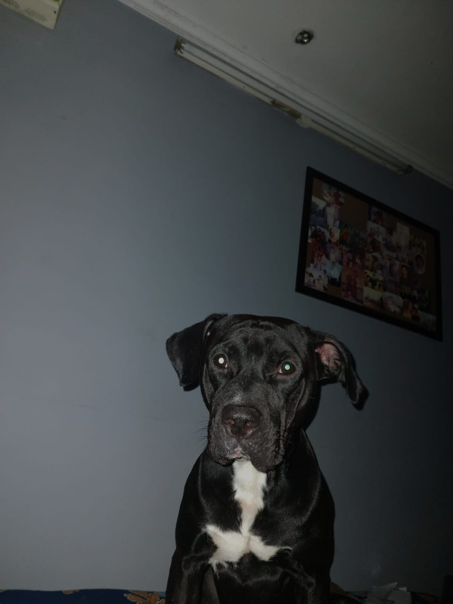

Story Of My Life
Pranay MayalHi! I have enjoyed a very good life till now and i dont have many regrets , the regrets I have is of not working on my self more because at the end you are the last person standing for your self , there will be people by your side but not more than yourself . I want to be strong not only for my self but also for people who are by my side and i will achieve the strength i have dezired no matter what this world throws at me . All I know is where i stand now is not enough and it is a very long road ahead.If i like this i would make a blog out of this and i would be more than happy to share all my experiences with you . I will add a like button in the end of this page to check that .......Adios
My man
This up there is my buddy, love , my man and the one who holds a great part of diminishing the solitude in my life